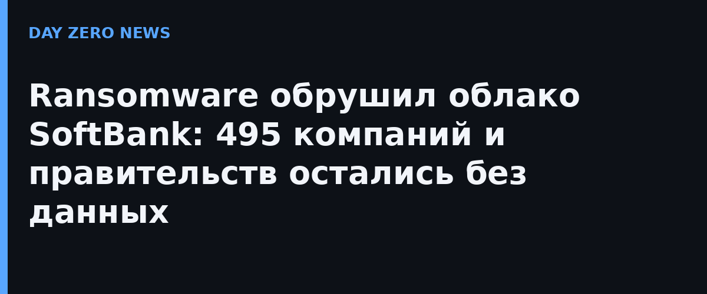

Сбой начался 7 октября 2026 года около 3:40 утра по местному времени. Во втором официальном уведомлении IDC Frontier подтвердила: отказ в восточном регионе IDCF Cloud — результат ransomware-атаки третьих лиц. В зоне поражения оказались четыре доступности-зоны (tesla, henry, pascal, joule): виртуальные машины клиентов остановились, а повторный запуск оказался невозможен. В третьем отчёте компания назвала масштаб — 495 компаний и местных органов власти, каждый уведомляется персонально.
Эффект домино оказался сильнее самого взлома. Логистическая система Nissui Logistics (дочка одного из крупнейших производителей морепродуктов Японии), работающая в дата-центре IDC Frontier, встала на 17 объектах по стране — около 1200 бизнес-партнёров, от ритейлеров до ресторанных сетей, остались без приёмки и отгрузок. А префектура Ибараки, отдавшая сайты на аутсорс этому провайдеру, лишилась и портала правительства, и сайта полиции — оба недоступны.
Самая жёсткая фраза официального уведомления: по текущей оценке провайдера, данные клиентов в поражённых зонах извлечь и восстановить невозможно — спасают только резервные копии самих клиентов. При этом IDC Frontier прямо признаёт, что сама не могла гарантировать их сохранность: консоль управления облаком остановлена, клиентов просят готовиться к переносу в другие окружения и срочно снимать бэкапы с оставшихся регионов. О вторичной утечке личных данных официально не заявлено — компания пишет, что масштабы ущерба и факт утечки ещё проверяются, ведётся расследование с внешней security-фирмой, о происшествии уведомлены профильное министерство и полицейское управление Токио. 14 октября вышел пятый отчёт о ходе расследования, 18 октября — шестой: провайдер объявил о восстановлении работы сервиса резервного копирования.
Практический блок из этого кейса переносим на любой хостинг: резервная копия должна лежать не в том же регионе и не у того же провайдера; регулярность бэкапов нужно проверять тестами восстановления, а не наличием галочки; для критичных сервисов нужен план ручного переключения, потому что «консоль недоступна, всё делает провайдер за вас» — реальное состояние при таком инциденте. Экспертные оценки об объёмах затронутых данных (в сети фигурируют петабайты затронутого региона) остаются именно оценками: официальное уведомление цифр утечки не содержит.
Япония сейчас на волне серии атак на инфраструктуру: только за последние недели — более 20 крупных компаний страны сообщили о взломах и утечках, а правительство на межведомственном совещании 9 октября потребовало от операторов усилить киберзащиту. Кейс IDC Frontier — учебник риска концентрации: один дата-центр, один провайдер — и цепочка поставок продовольствия вместе с сайтами властей ложится за одну ночь.